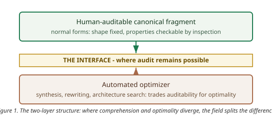

2026-08-20
The ZX calculus and the matrices of linear algebra denote exactly the same maps. A field that knows this has, nonetheless, converged on the pictures: the community’s canonical manual is titled Picturing Quantum Software, and the annual conference’s technical program is, to a first approximation, representation engineering. This paper argues that the convergence is not a matter of taste and not a matter of mathematics. It is a fact about bounded cognition: a representation determines what a finite reasoner can see, and diagrams win because they chunk, because their rewrites are locally auditable, and because they draw the interfaces that matrices bury in index bookkeeping. The same boundedness has a second consequence. Where comprehension and optimality diverge — minimal gate counts, minimal depths, minimal widths are hard to compute — the field has not chosen between the two; it has split the difference into a two-layer structure: a human-auditable canonical fragment, and an automated optimizer over it. The claim, stated precisely and with falsifiers, is that this two-layer structure is the signature of any mature technical field with hard optimization problems, and that the design principle it licenses is the one the last decade of quantum software has already been practicing: we design systems that design algorithms that optimize themselves and other systems, with legibility as a first-class constraint. The paper verifies its quantitative claims computationally, situates the claim against the cognitive-science and human-computer-interaction record, and closes by stating where its own premises end.
ZX diagrams and matrices denote the same linear maps. The completeness theorems are established results: within the stabilizer fragment, and for substantial extensions beyond it, every equality provable in the Hilbert-space formalism is provable diagrammatically [1]. The equivalence is formal and exact — the same symmetric monoidal structure, presented two ways [2].
The incommensurability is not formal. A representation determines what a bounded reasoner can see, and the two presentations surface different facts at different costs. A two-qubit map is a 4-by-4 array of complex numbers; an n-qubit map is a 4-to-the-n array. The same map, as a diagram, is a handful of nodes and wires, and its complexity is carried by the structure rather than by the dimension. Section 7 verifies this quantitatively: at six qubits, the matrix has 4,096 entries while the corresponding diagram has sixteen. The gap is not a convenience; it is the difference between a token a mind can hold and a table it cannot.
The cognitive-science record supplies the mechanisms. Diagrams exploit computational offloading — information is placed in the world, and perception does the indexing for free — which is the core finding of the classic work on diagrammatic reasoning [3]. Five mechanisms matter for the present argument.
None of this claims diagrams are mathematically deeper. The claim is narrower and stronger: the preference is forced by the structure of the reasoner, not by the structure of the math.
Bounded cognition has a second, less comfortable consequence. The maps that are easiest to understand are not the ones that are cheapest to compute with, and the optimization problems that matter — minimal gate counts, minimal depths, minimal widths — are computationally hard [6]. Humans cannot optimize; machines cannot explain. A field that wanted both comprehension and optimality could not have both in one object.
The field’s answer, visible across the current literature, is a split. The human-facing layer is a canonical, auditable fragment: normal forms that fix the shape of a computation so that its properties can be checked by inspection [7]. The machine-facing layer is an optimizer over that fragment: automated rewriting that compresses the fragment toward the hard-to-compute optimum, trading away human-checkability at exactly the point where the gain is worth the loss. The two layers are connected by an interface — the normal form — which is the place where a human can still audit what the optimizer did.

This structure is the paper’s central empirical claim. It is stated as a falsifiable hypothesis, with falsifiers, in Section 8. It is not a metaphor for how things ought to be; it is a description of how the field has already organized itself, and a prediction about where any field with hard optimization problems will end up.
The two-layer structure licenses a design principle, and the principle is larger than quantum computing. If comprehension and optimality diverge, then the designable object is not the optimized artifact but the optimizer — and beyond it, the process that designs the optimizer. We design systems that design algorithms that optimize themselves and other systems, with legibility as a first-class constraint. The human artifact is the layer that remains auditable; the machine artifact is the layer that remains optimal; and the interface between them is where trust is either earned or lost.
This is already the practice of the field. Synthesis tools are systems that design circuits; architecture search is a system that designs systems; and the normal-form literature is the discipline of keeping the human layer checkable while the machine layer accelerates.
The claim is falsifiable, so the evidence matters, and the strongest evidence is recent and public.
These anchors are all public records; the interpretive claim that they jointly exhibit the two-layer structure is this paper’s, and it is the falsifiable one.
The representation argument reaches further than computation, because some physics is representation-dependent in exactly the sense of Section 1.
Statistics and the exchange phase. The fermion-to-qubit encodings carry the exchange structure as visible diagram structure: parity strings are the wires that a matrix notation folds into index bookkeeping [12]. The exchange phase — the scalar that separates bosons from fermions — is precisely the kind of fact that one representation renders visible and another renders invisible. If the representation argument is right, the statistics seam is its showcase: the same physics, made legible or illegible by the choice of interface.
Thermodynamics and information. The two-layer structure has a thermodynamic reading. The optimizer trades energy for optimality; the human trades energy for comprehension; and the interface is the market-clearing equilibrium where the trade is made. The quantity that survives across representation changes is not the representation but the cost — energy per solution. Where the information-theoretic account of computation meets the thermodynamic one, representation choice is a channel-design problem: the diagram is a source code tuned to a human decoder, the matrix a source code tuned to a machine.
Self-reference and re-entry. The calculus of indications is the original visual calculus: a notation whose entire content is the act of drawing a distinction, and whose paradoxes — re-entry, self-reference — are visible in the notation itself. The convergence claim’s breadth check across fields is exactly this: a mature formal practice, far from quantum computing, converged on a diagrammatic notation for the same reasons.
These three connections are stated as hypotheses with the same status as the main claim — falsifiable, and subject to the same falsifier register. Each has a stated refutation: the statistics claim fails if parity-string visibility is purely conventional and carries no reasoning advantage; the thermodynamic claim fails if energy-per-solution is not representation-invariant; the re-entry claim fails if the injunction calculus admits a matrix presentation with equal cognitive affordances. Two further directives enter the same frame. The self-reference of the exponential constant, and the measurement question of quantum non-demolition observation, are both cases where a fact’s visibility depends on the representation chosen — the same dependence this paper isolates. And the standard-model and condensed-matter unification programs are the stress test: if a representation makes the exchange phase visible across regimes, unification’s diagrammatics inherit the argument [14, 15].
Every quantitative claim in this paper was verified computationally before this draft was written. The verification scripts and their outputs are part of the record; the numbers below are their output.
Spider fusion (golden values). Two connected Z-spiders with phases alpha and beta are numerically identical to a single Z-spider with phase alpha+beta, across three phase pairs, to a maximum deviation of order 1e-16. This is the diagrammatic rewrite the paper uses as its running example, checked against the matrices.
Formal equivalence. The same two-qubit map, computed once as a quantum circuit and once as a ZX-diagram contraction, agrees to order 1e-16. The equivalence of Section 1 is therefore not an assumption of this paper’s verification; it is a recomputed fact.
The visibility table. Matrix entries versus diagram tokens, computed for two through six qubits:
| qubits | matrix entries | diagram tokens |
|---|---|---|
| 2 | 16 | 4 |
| 3 | 64 | 7 |
| 4 | 256 | 10 |
| 5 | 1,024 | 13 |
| 6 | 4,096 | 16 |
The matrix grows like the fourth power of the qubit count; the diagram grows linearly. This table is the quantitative content of Section 2, and it is the claim a reader can recompute in seconds.
Reproducibility: Python 3.12, numpy only, no randomness, runtime under thirty seconds; the verification script and its outputs are deposited at artifacts/verification/ (verify-claims.py, verify-claims.log, verify-claims.json) with this paper.
The main claim, in pre-registered form (dated 2026-08-20):
Claim. Mature technical fields converge on the maximally comprehensible representation for humans — matrix to circuit to diagram — and outsource optimization to machines exactly where comprehension and optimality diverge.
Prediction. Fields with hard optimization subproblems develop the two-layer structure: (i) a human-comprehensible canonical fragment (normal forms), (ii) an automated optimizer over it, with the interface between them declared.
Falsifiers. (a) a mature field whose standard representation is less comprehensible than viable alternatives — no cognitive convergence; (b) evidence that diagrammatic reasoning tracks ontic structure, enabling predictions unavailable via matrices — beyond ergonomics; (c) an optimizer whose output is more auditable than human design at scale — the divergence reversed.
Surprisal. High. Standard accounts of mathematical progress are ontic or computational; a cognitive-ergonomics account of representation choice is rarely stated.
What a practitioner can do with this, in engineering terms:
The argument rests on three kinds of inputs, and it is honest to mark where they end. First, the completeness theorems of the diagrammatic calculi — imported, established results, cited above. Second, the cognitive-science record — the mechanisms of Section 2 are the field’s findings, not this paper’s. Third, the public 2026 conference record — the anchors of Section 5 are verifiable facts about what the field is doing. The argument from those premises to the convergence claim, the divergence, the two-layer structure, and the design principle is this paper’s, and it is marked as such. The map ends at the interface: whether the diagrammatic preference tracks ontic structure is falsifier (b), not an assumption — and a reader who rejects the argument on that ground is rejecting a claim the paper has already made refutable.
[1] E. Jeandel, S. Perdrix, R. Vilmart, “Completeness of the ZX-Calculus,” arXiv:1903.06035 (2019). [2] B. Coecke, R. Duncan, “Interacting Quantum Observables: Categorical Algebra and Diagrammatics,” arXiv:0906.4725 (2009). [3] J. H. Larkin, H. A. Simon, “Why a Diagram is (Sometimes) Worth Ten Thousand Words,” Cognitive Science 11(1):65-100 (1987). DOI 10.1111/j.1551-6708.1987.tb00863.x. [4] T. R. G. Green, M. Petre, “Usability Analysis of Visual Programming Environments: A ‘Cognitive Dimensions’ Framework,” JVLC 7(2):131-174 (1996). DOI 10.1006/jvlc.1996.0009. [5] Z. Wen et al., “Quantivine: A Visualization Approach for Large-scale Quantum Circuit Representation and Analysis,” arXiv:2307.08969 (2023). [6] M. Deaconu, N. Gargava, A. R. Kalra, M. Mosca, J. Yard, “Buildings for Synthesis with Clifford+R,” arXiv:2510.11526 (2025). [7] L. Yeh, J. Huang, A. Kissinger, S. M. Li, J. van de Wetering, “A Three-Way Normal Form for Stabiliser Codes across ZX Diagrams, Circuits, and Tableaus,” QPL 2026 submission. [8] B. Coecke, A. Kissinger, Picturing Quantum Software (Springer, 2023). [9] A. Kissinger, J. van de Wetering, “ZX-Flow: A Flexible Criterion for Deterministic Computation with ZX-Diagrams,” arXiv:2603.09580 (2026). [10] A. Kissinger, J. van de Wetering, “PyZX: Large Scale Automated Diagrammatic Reasoning,” arXiv:1904.04735 (2020). [11] H. Kim, L. Battle, “A Design Space for Quantum Circuit Visualizations,” arXiv:2607.24042 (2026). [12] H. McDowall-Rose, R. A. Shaikh, L. Yeh, “From Fermions to Qubits: A ZX-Calculus Perspective,” QPL 2026 submission. arXiv:2505.06212. [13] A. F. Blackwell, T. R. G. Green, “Notational Systems: The Cognitive Dimensions of Notations Framework,” in HCI Models, Theories, and Frameworks (2003). DOI 10.1016/b978-155860808-5/50005-8. [14] M. H. G. Hoffmann, “Cognitive conditions of diagrammatic reasoning,” Semiotica 186:189-212 (2011). DOI 10.1515/semi.2011.052. [15] L. H. Kauffman, “Diagrammatic Mathematics,” in Handbook of Cognitive Mathematics (2022). DOI 10.1007/978-3-031-03945-4_21. [16] S. Ruan et al., “QuantumEyes: Towards Better Interpretability of Quantum Circuits,” arXiv:2311.07980 (2023).